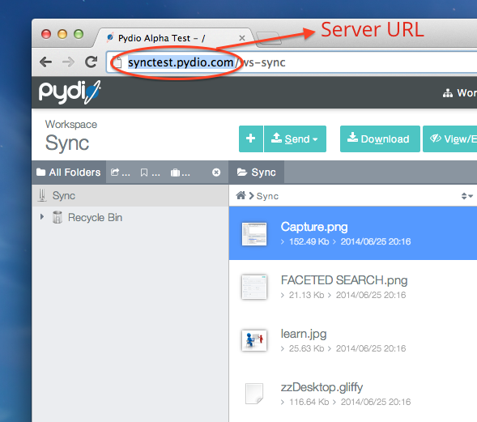

{{_('The server URL is the adress that you can see in your browser when accessing Pydio via the web.')}}
{{_('It starts with http or https depending on your server configuration.')}}
{{_('If you are logged in Pydio and you see the last part of the URL starting with "ws-", remove this part and only keep the beginning (see image below).')}}

{{_('Connecting ...')}}
{{_('Configure Connection')}}
{{_('Error while trying to connect to %1 :', job.server)}}
{{_('%1', error)}}
{{_('Connect to the server with the same URL as the one you would use to access through a web browser, e.g. http://mydomain.com/pydio')}}